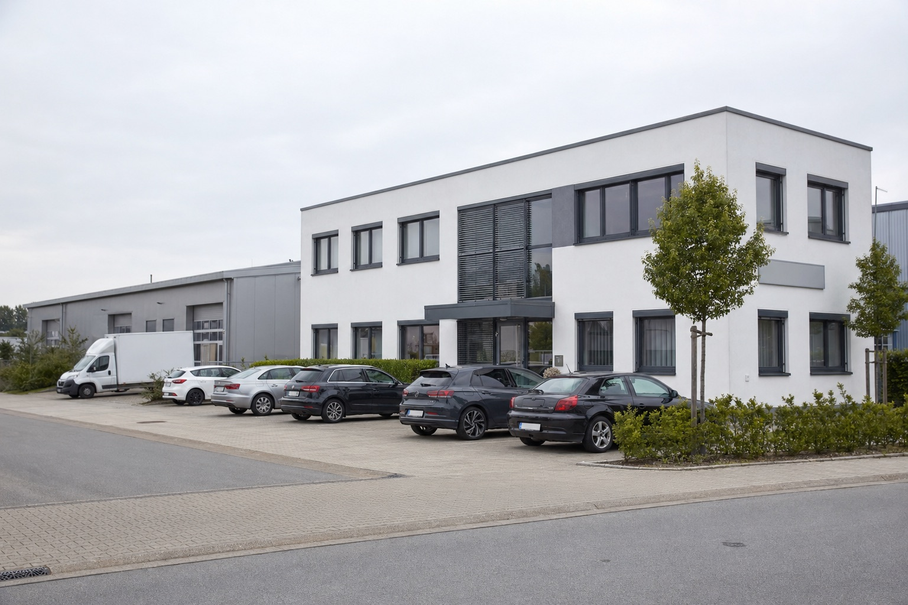

Artikel · Industrie-Perspektiven
Wie sich der Mittelstand digitalisiert.
Beobachtungen aus Branchen, Notizen aus Projekten, Antworten auf Fragen, die im Erstgespräch immer wieder kommen.

Industrie-Perspektive
Wie sich die Druckindustrie neu erfindet.
Auflagen schrumpfen, Aufträge werden kleiner und schneller. Wo digitale Mitarbeiter den Innendienst entlasten. Und wo sie es bewusst nicht tun.
Lesen →
Praxis · Workflow Automatisierung
Workflow Automatisierung im Mittelstand. Wo der Anfang sich lohnt.
Welche Prozesse sich zuerst lohnen, wo Plattform-Tools versagen, und wo ein digitaler Mitarbeiter im Backoffice ansetzt. Ohne Migration.
Lesen →
Praxis · KMU Digitalisierung
KMU Digitalisierung. Fünf Schritte ohne Plattform-Falle.
Fünf konkrete Schritte für die KMU Digitalisierung. Ohne Migration, ohne Vendor-Lock-in, ohne Big-Bang. Klein anfangen, früh messen.
Lesen →
Industrie-Perspektive · KI im Mittelstand
KI im Mittelstand. Wo der Backoffice digital wird.
Drei konkrete Use-Cases — Buchhaltung, Service, Vertriebsinnendienst — die sich zuerst rechnen. Und wo Plattform-Tools regelmäßig kippen.
Lesen →